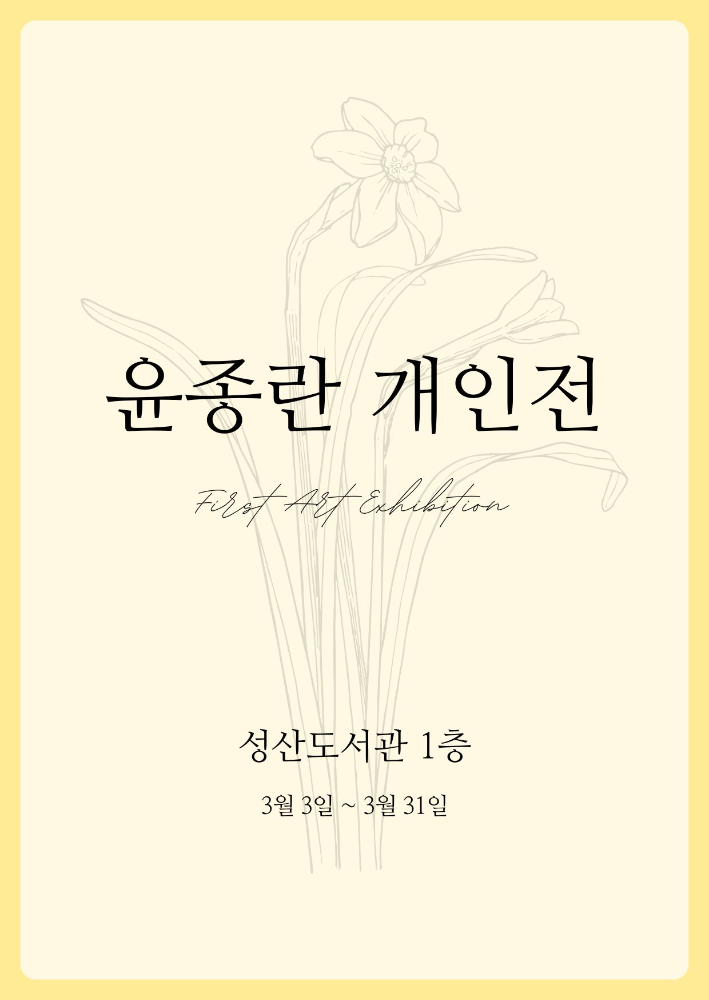
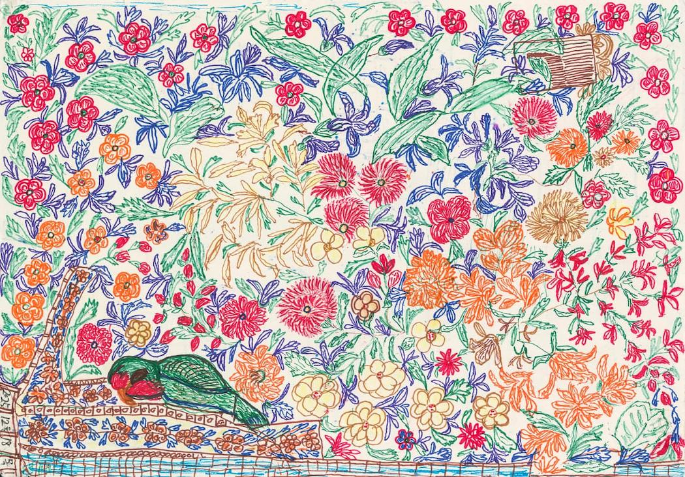
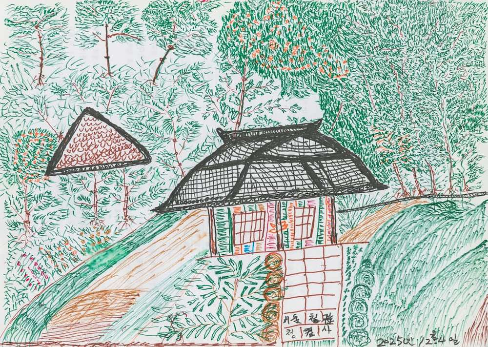
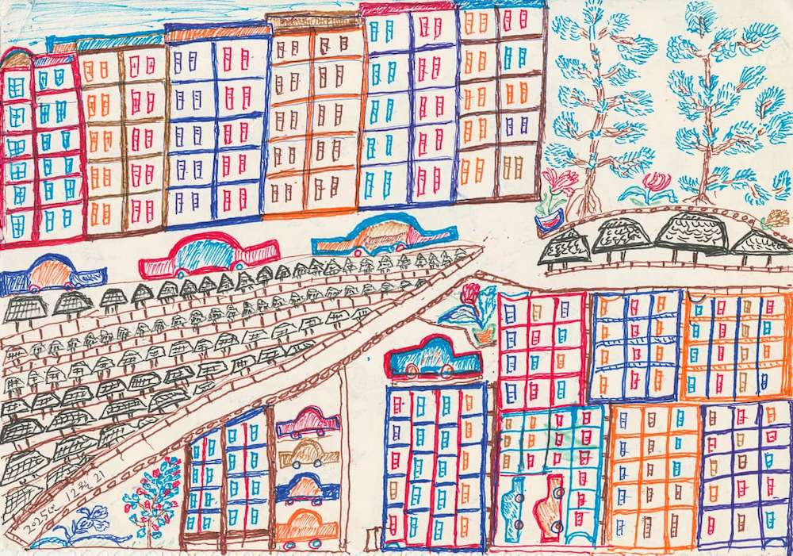
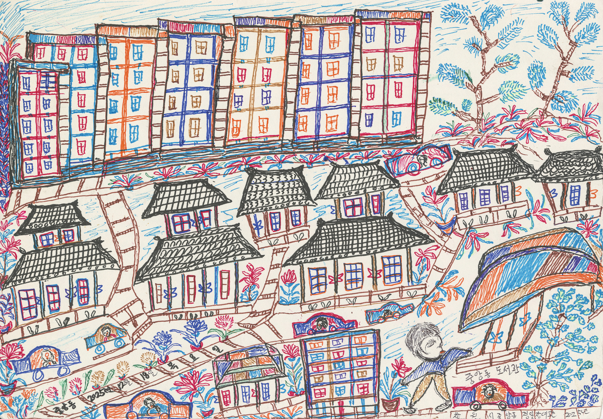
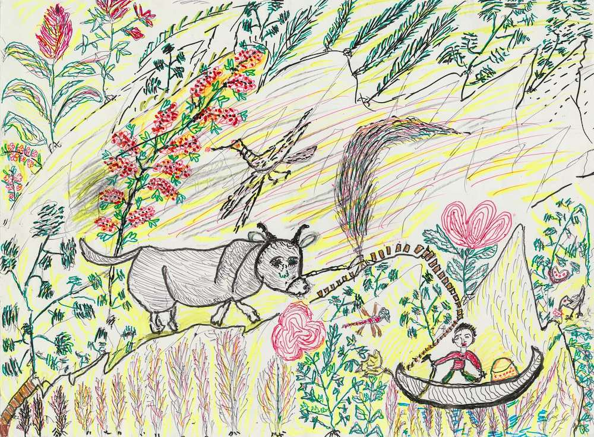
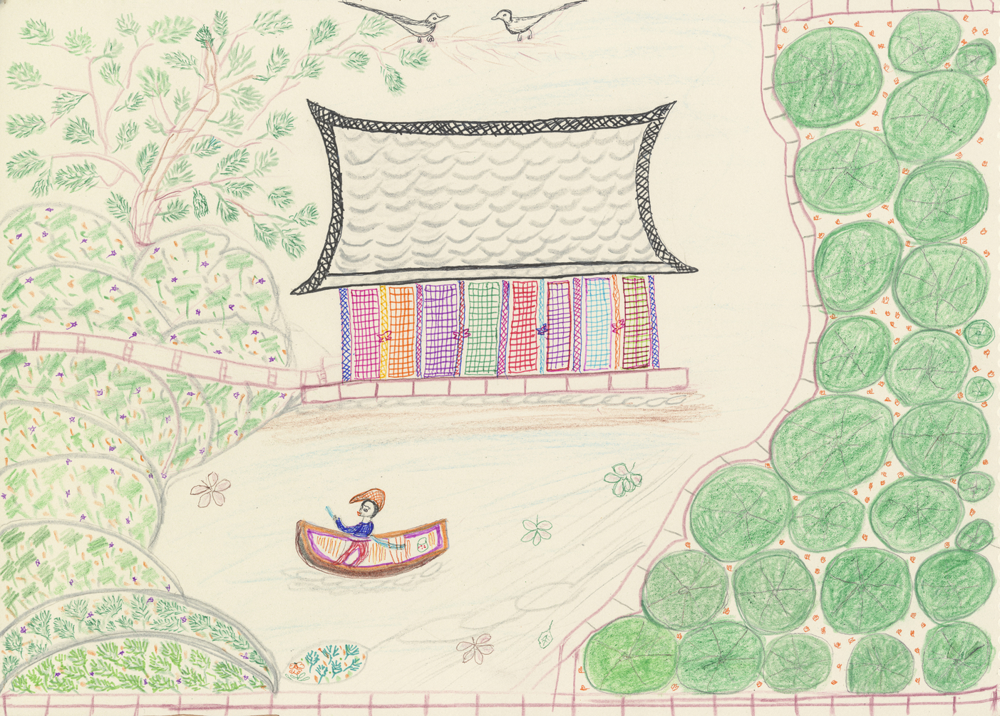
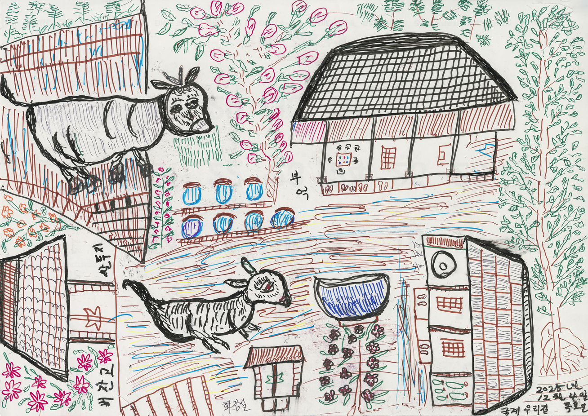
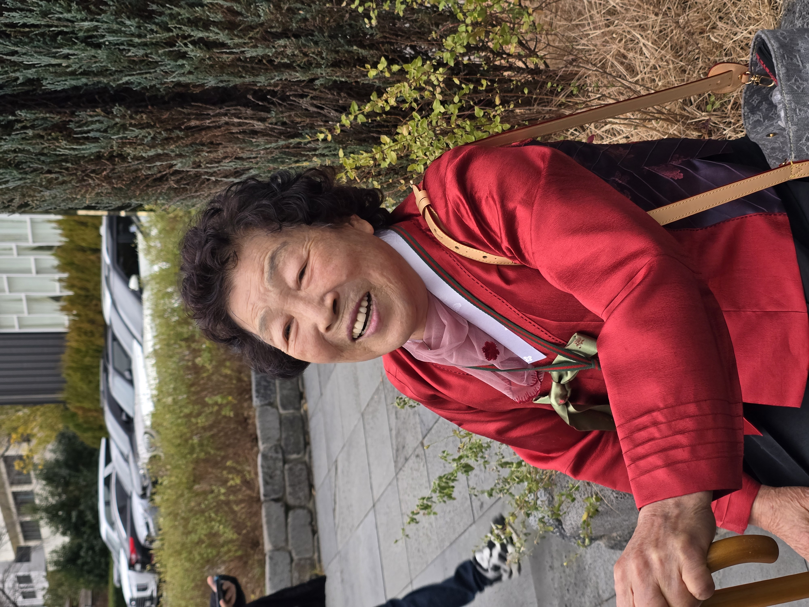

87세 할머니의 개인전시
새벽2시, 손님이 두고 간 펜으로 그린 고향의 봄

새벽2시, 손님이 두고 간 펜으로 그린 고향의 봄

작은 달력 뒷면의 월별 이미지 중 하나를 따라 그린 그림.
초록색 작은 앵무새와 꽃잎 하나하나 비슷하게 그려보려고 애를 썼다.
배경에는 상상력을 더했다.
전시회를 하려면 그림이 많아야 한다는 손녀의 성화에 4절 스케치북에 빼곡히 채워넣은 할머니의 새벽 시간.

"테레비전 보고 있는데 청와대가 나오데. 저런 거를 함 그리 봐야 겠다 싶어서 이리저리 그렸지."


비 온 뒤 맑게 갠 중앙동 아파트의 정겨운 모습.
산 위로 반달이 걸리고, 집집마다 불빛이 반짝이는 중앙동의 밤 풍경을 담았다.
작가의 시선을 거치면 무채색 도시도 알록달록 생명을 얻는다.
집집마다 꽃과 나무가 가득한, 생명력 넘치는 활기찬 도시.

"잠이 안 와가지고... 우리 집 한번 그려볼까? 고향이 그립더라고. 그래서 고향이 그리워서 그린 거라."
작가는 새벽에 잠이 오지 않으면 그리운 고향, 그 날 본 꽃과 나무 등을 떠올렸다.
제대로 된 그림도구 하나 없이 버려진 볼펜으로 달력 뒷면에 그리기 시작한 그림은 꽃과 풀, 정겨운 동물과 집, 그리운 장소들로 가득하다.

작가의 상상력은 빈 종이에 고요한 산사와 연못을 만든다.
연못 위에는 배와 사공이 유유히 떠있다.
그림을 본 누군가가 세상에 이런 그림이 없다며 감탄했다는 전설의 그림.

작가가 그리워하던 고향 집이 재현된 작품.
슬레이트 지붕, 벼 창고, 쌀두지(쌀뒤주), 감나무, 소, 그리고 뚱아.
"할머니, 이건 뭐예요?"
"그거 개다. 뚱아. 뚱아라꼬 개라고 그맀는데. 개가 이리 안돼. 참 이 그리기 힘들드라고."
"뚱아??ㅋㅋㅋ"
"옛날에 키우던 갠데 참 크고 인물이 잘생기고..."

세상에서 제일 고운 87세 할머니 윤종란
모두가 잠드는 시간, 기억을 그리는 화가
[ 크레딧 ]
Sponsor 이혜숙 | Director 이채영 | Design 이래현
Technical 이동건 | Technical 최치현 | Assistant 이현민
Special Thanks to 언제나 응원해주신 가족 일동